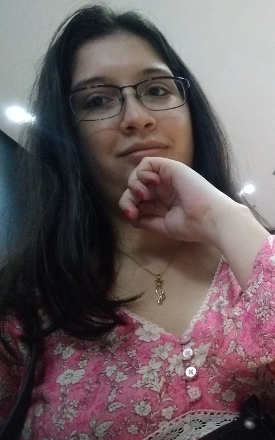

About the authoress

Hello, my name is Carolina França and I am a designer, aspiring to an artistic career - I use the artistic pseudonym "Eliestia" to sign my works and projects.
I have a degree in Computer Science from "UNIFACS" and technical training in Graphic Design from "UniRuy" (formerly "Faculdade Ruy Barbosa"), at my 28 years and
enthusiastically seeking new experiences in the areas.
Since I was a child, I always had a passion for arts and digital projects; from small online comics, to editing pages and websites like on "Tumblr" or the
customizable mascot pages on "Neopets", I have always enjoyed art and the act of creation. Because of this, I ended up enrolling in related colleges, where I
could develop as a "web designer", "web developer"; or in more creative areas, such as "marketing" or "graphic designer", always seeking to explore this talent
of mine.
I am a person who works (mostly) independently, althought would never refuses to work in duos, trios or larger groups to carry out large-scale projects.
I am interested and passionate about collaborations between other artists, arts and events: whenever possible, I sign up for such events - and to that end,
this website also serves as a way to store and showcase my participation in these events.
During my time at "Ruy Barbosa" college, as certain projects involved helping NGOs, I ended up developing a certain appreciation for helping such causes and
I see it as both a way of helping others and gaining experience, especially for life: learning to value even the little things, to help even with a comforting word,
to have empathy and put yourself in the other person's shoes, understanding their needs and desires.
I am currently working voluntarily for the "Instituto Social Jejé de Oyá" from Cuiabá (MT) while looking for jobs in the mentioned areas, but also looking for work in
the areas mentioned, but I am also offering my assistance to NGOs through websites such as "Atados" (a website for finding volunteer work, available in Brazil)
or even "LinkedIn" itself, while I continue to develop work independently and look for new artistic events to participate in, always expanding my portfolio.